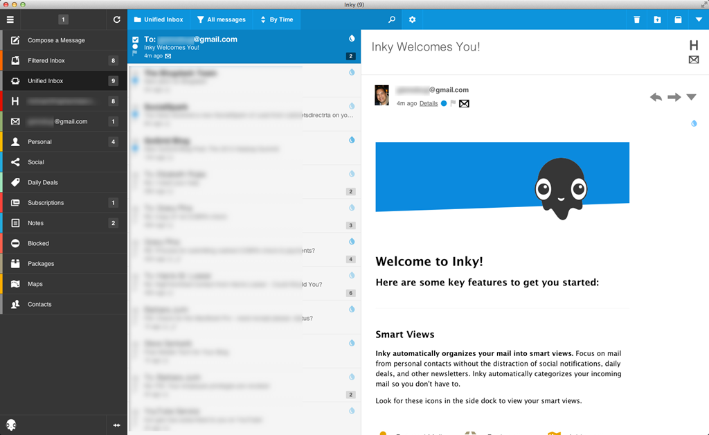
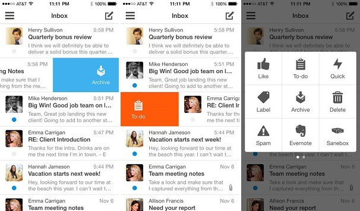

My quality of life would suffer without this app
What we'll be talking about:
Previous mail apps I used, and why they ended up making me really sad
Why CloudMagic was worth the $20, even when there are some things that need some work
Personal requirements for email clients:
Had to support all three of my email accounts, across Gmail and Yahoo!
Setup and sync without much fuss
UI needed to not make my eyes bleed
Desktop Client I used to love but then it got really, really sick: Inky
Known for: categorizing all of your emails under "Smart Views" and listed everything based on importance to you
It looked like this when I last used it, only the Smart View icons were bigger:

What I loved about this app:
Automatically found tracking information for shipments across all emails -> collected it all under the Packages Smart View for real-time tracking, yay! ♡
Gave you the option to disable images in emails
One-click Subscription Management: Unsubscribe from all the things!
One of the few that supported IMAP for my Yahoo! accounts without having to pay! (yes, this was quite some time ago!)
Things that sounded cool in theory, but were actually kinda "meh"
Inky's default view would list items depending on importance
You can change whether or not something is relevant to you by clicking on the ink blot icon
But what happened?!
Inky just stopped working for me:
Started to miss some shipments in the Packages Smart View
Inky kept having to resync aaaaall of my email, from the dawn of time, and then, after all of that waiting, it would crash!
My lamentations were ignored by Inky's support team
We Have A New Challenger!
(sort of)
What was good about it?
It mostly worked
Didn't try to destroy my email archives when trying to sync, like Mail tried to!
Had a good-looking UI
What was bad about it?
It was slooooooooooowwwwww
It kept setting off my Sophos Anti-Virus when I was not in danger
In Summary
The desktop clients I tried were not very good at the basic functionality of viewing my emails in a timely fashion.
Moving on -> Mobile Clients
Summary of common problems with mobile email clients
Sync/push notification delays -> having to manually resync/check email for app to update
Unwieldy setup
Ads
Boxer

Probably best known for its extensibility with other applications and swiping gestures
Best parts of the app for me
Avatars shown to the left of messages -> helped to more immediately discern where emails were coming from, differentiating messages
Swiping gestures on lock screen -> allowed an immediate means to do things such as mark something as read or to open the email in question
Things I didn't like
Personally found myself completing the wrong actions via swiping -> no matter which way I would set the gestures, my brain would fart at some point and I would archive something I meant to mark as spam
Emails not getting sent to recipients, no matter how many times I retried
Bug: If I exited and re-entered the app while editing a draft, I found that after sending out the finished email, I would later find multiple instances of that email in the reply history
CloudMagic

I can finally have a consistent experience across all of my devices!! AND EVERYTHING LOADS SO QUICK OMGGGGGGG
Things I specifically love
Practically instantenous populating of my emails, and search doesn't have to take forever to find something more obscure
I can share via email random articles and stuff from the interwebz again! (usually only Mail can do this from the mobile browser!)
I can make a new item on Todoist or save something on my Pocket account via Cards!
Things that could use some improvement
On mobile -> By default, CloudMagic saves all attachments, noooo!
On desktop -> A way to customize the notification sound would be nice
Better spam management
In closing
In the future, I'm sure the app might have an app-breaking bug or suddenly lose all support, but for now I'm just happy to have just one email client that I can log into across all my devices, and all the important things that need to work actually, in fact, do!